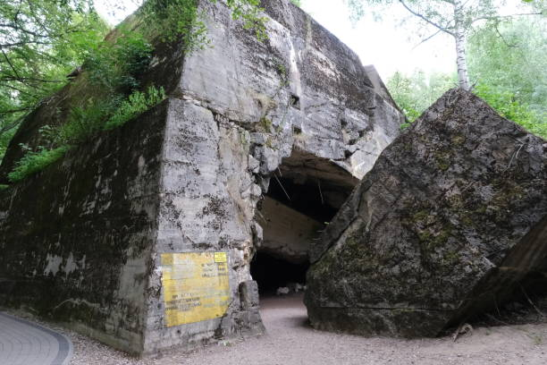
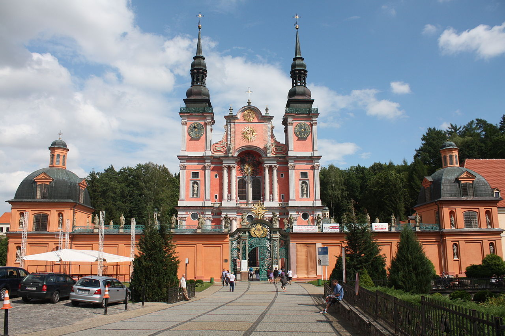
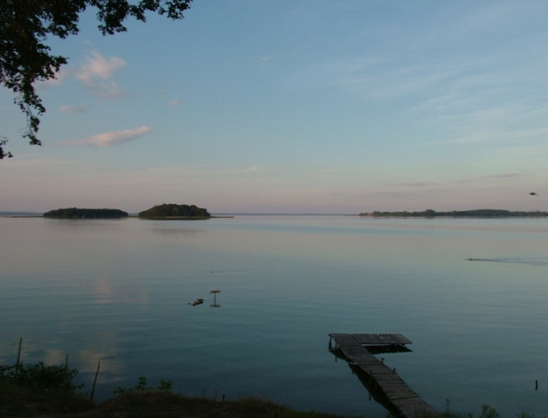
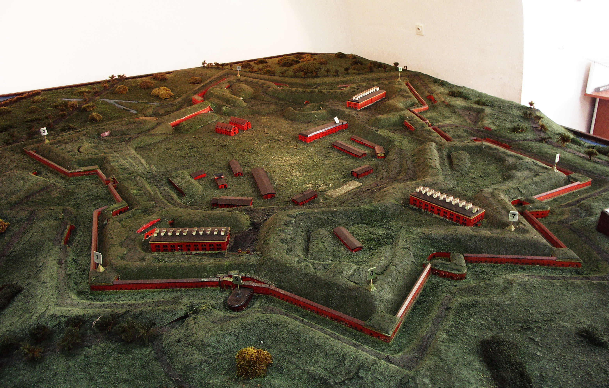

Miejsca warte odwiedzenia
Wilczy szaniec
Niezależnie czy jesteś pasjonatem historii, interesujesz się przyrodą czy zwyczajnie szukasz ciekawego miejsca do odwiedzenia, będąc na Mazurach, nie możesz przegapić ruin Byłej Kwatery Wojennej Adolfa Hitlera o kryptonimie „Wilczy Szaniec” (Wolfsschanze / Wolf’s Lair).
Kościół w świętej lipce
Znajduje się tutaj jedno z najbardziej znanych w Polsce sanktuariów maryjnych. Świętolipska bazylika pw. Nawiedzenia Najświętszej Marii Panny wraz z obejściem krużgankowym i klasztorem jest jednym z najważniejszych zabytków baroku w północnej Polsce.
Jezioro śniardwy
Śniardwy (niem. Spirdingsee) – największe jezioro w Polsce, w województwie warmińsko-mazurskim, w powiatach: mrągowskim i piskim, położone w Krainie Wielkich Jezior Mazurskich, w dorzeczu Pisy. Jest to jezioro polodowcowe.
Twierdza Boyen w giżycku
Twierdza Boyen w Giżycku powstała w latach 1843 – 1855 jako obiekt blokujący strategiczny przesmyk pomiędzy jeziorami Niegocin i Kisajno. Na początku kwietnia 1843 r. król Fryderyk Wilhelm IV wydał rozkaz rozpoczęcia budowy twierdzy. Opracowany został projekt, który zakładał wybudowanie na planie sześcioboku ziemno–murowanego fortu zaporowego w bezpośrednim pobliżu miasta na tzw. Wyspie Giżyckiej.